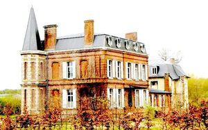
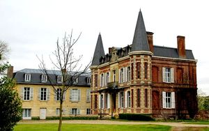
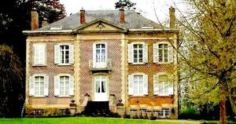
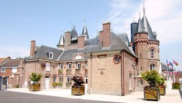

Recensement Jean-Claude Truffet




| Département | 80 — Somme |
| Canton | Corbie |
| Commune | Behencourt |
| Type d'édifice | Château |
| Période d'origine | XVII |
| Coordonnées GPS | 49° 58' 35" Nord, 1° 41' 36" Est |
Deux châteaux dans cet article; Behencourt et Frechencourt. BEHENCOURT, le nom du village est cité dès le XIIe siècle, sous la forme "Behencurt". A cette époque est également attestée l'existence d'une seigneurie (Simon de Béhencourt, chevalier en 1190). Le château attaché à cette seigneurie est toujours en place. Une autre seigneurie est attestée dans l'écart de Vilaincourt, mais le château avait déjà disparu bien avant la Révolution. Béhencourt avait une maladrerie, qui fut rattachée à l'Hôtel-Dieu d'Amiens en 1695-1697. Les autres édifices de la commune furent pour la plupart construits aux XIXe et XXe siècle. Le château de Béhencourt se compose de deux corps de logis : l'un, en craie, édifié au XVIIIe siècle, a été amputé de son aile en retour par un incendie. Cette partie disparue fut remplacée par un nouveau corps de logis en brique, en 1862 environ, achevé lors de la guerre de 1870. Il fut occupé par les Allemands puis par les Anglais, pendant la deuxième guerre mondiale. Le corps de ferme adjacent et le parc avec son lac datent de la deuxième moitié du XIXe siècle : la grange-écurie longeant la rue porte la date 1889. Béhencourt se compose d'un logis isolé dans un vaste parc donnant sur l'Hallue. L'aile ouest de ce logis est construite en craie sur soubassement de grès, et couverte par une croupe brisée. Elle est reliée à la partie nord par un petit passage couvert d'un essentage d'ardoise. La partie nord du château présente une façade sur le parc en brique et pierre, les autres élévations étant simplement en brique. Elle est couverte par une croupe brisée, et flanquée de deux tourelles à flèche polygonale. A l'est du logis se trouve une cour de ferme. Cette dernière est bordée à l'est par un hangar récent, qui a pris la place d'un ancien logement de fermier en torchis.
FRECHENCOURT, le nom de Fréchencourt est mentionné sous sa forme française dès le XIIe siècle. C'était au Moyen-Age le siège d'une seigneurie (Drix de Waullincourt, sire de Fréchencourt en 1283) qui appartient ensuite aux seigneurs de Contay. Une chapelle castrale et un château-fort sont attestés dès le XIIIe siècle. Dans le premier tiers du XVIIe siècle, un nouveau château fut construit suivant une orientation nord-sud. Au XVIIIe siècle furent édifiés des communs et une nouvelle chapelle funéraire datant de 1785. Au XIXe siècle, le château fut démoli et fit place en 1856 à une maison de maître en briques, due à l'architecte amiénois Pinsard. Des communs furent bâtis ou agrandis en 1926 une remise en briques fut ajoutée près de la chapelle. De l'entre deux guerres date aussi le prolongement en briques du logis du fermier. Les bâtiments agricoles, qui se trouvent de l'autre côté de la rue, mais dépendent de la ferme du château, semblent dater des années 1920-30. Les dernières dépendances construites dans l'enceinte du château sont deux hangars datant de 1944 et 1962. La chapelle fut restaurée dans sa partie extérieure vers 1988.
Famille de Simon de Béhencourt"
Deux châteaux dans cet article; Behencourt grav 1-2 et Frechencourt grav-3. Behencourt GPS : 49° 58' 35" Nord, 1° 41' 36" Est